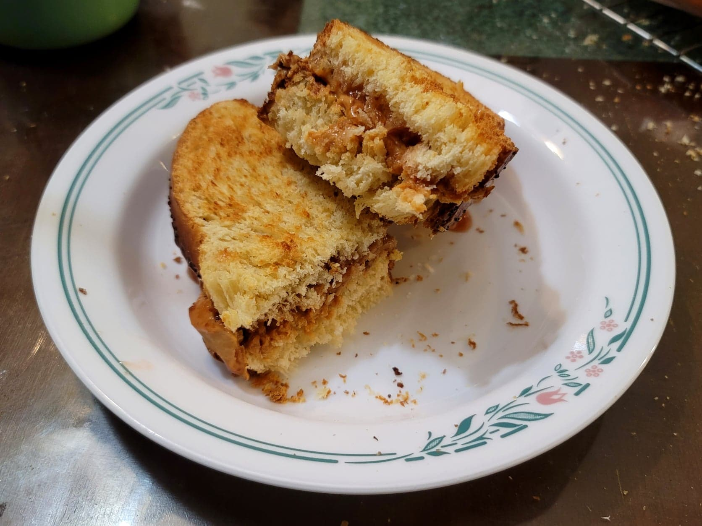

Peanut Butter & Jelly

Ingredients:
- 2 slices Challah, or any bread
- Any Nut butter
- Any Jelly, Jam, or Preserves
Instructions:
- Toast the slices of bread in either a toaster or in an oven.
- Slather the nut butter on one slice of bread, and the jam on the other. Combine the two slices and serve.